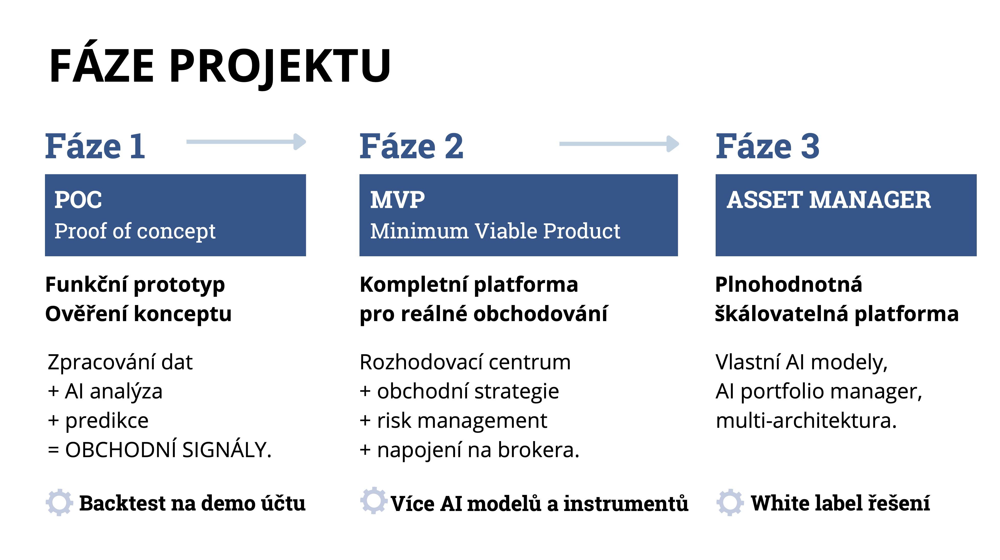

Projekt rozvíjíme ve třech postupných fázích.
První fáze je Proof of Concept. Funkční prototyp ověřuje, že systém dokáže zpracovávat data, analyzovat trh a generovat obchodní signály.
Druhá fáze je MVP. Kompletní trading platforma pro reálné obchodování s vlastním rozhodovacím centrem, strategiemi a risk managementem.
Třetí fáze je plnohodnotný AI Asset Manager. Škálovatelná platforma s vlastními AI modely, portfolio managementem a možností licencování pro finanční instituce.